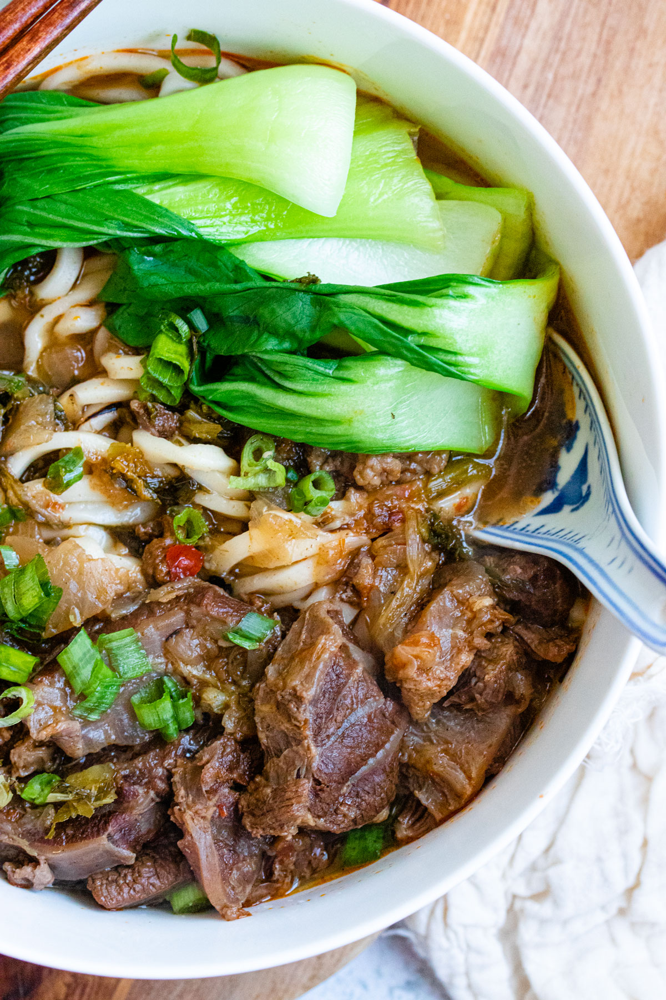

Taiwanese Beef Noodle Soup

Equipment
Instant Pot (8 qt)
Ingredients
- 3 lbs boneless beef shank (cut into 1.5 inch cubes)
- 2 tablespoon neutral oil
- 2 slices ginger
- 1 yellow onion (chopped into wedges)
- 6 cloves garlic (smashed)
- 2 dried red chili
- 2 stalks scallion (chopped into 3 inch segments)
- ¼ cup light soy sauce
- ¼ cup Shaoxing wine
- 2 tablespoon granulated sugar
- 3 tablespoon chili bean sauce (doubanjiang)
- 1 tablespoon tomato paste
- 8 cups water
Aromatics
- 2 bay leaves
- 1 cinnamon stick
- 4 star anise
- ¼ teaspoon five spice powder
- 1 dried orange peel
- Remainder of Ingredients
- 900 g thick wheat noodle
- Bok choy
- Scallions (chopped)
- Pickled potherb mustard (optional)
Instructions
- Prep beef shank by chopping into 1.5 inch cubes.
- Boil water in a large pot. Add beef shank to pot and allow the water to come back to a boil. Once it's reached boiling point again, let simmer for 1 minute. This is to help remove any impurities from the meat.
- Drain pot and rinse meat with fresh cool water to remove any remaining impurities. Set aside in a colander.
- Heat a wok up to medium-high heat and add neutral oil. Sauté garlic, ginger, dry chili pepper, onion and scallion until the onion is translucent.
- Add soy sauce, Shaoxing wine, spicy bean paste, tomato paste, and sugar. Stir frequently until the sauce begins to bubble.
- Add sauce to Instant Pot with the meat. Then, add 8 cups of water. Ensure you are not exceeding the maximum line indicated on the pot insert.
- Add aromatics. Close lid and click Meat/Stew option. Set timer for 60 minutes. If you do not have Meat/Stew option, set pressure to High and timer to 60 minutes. The Instant Pot will take at least 30-40 minutes to build up pressure before it starts the cooking time.
- Allow Instant Pot to do a Natural Release which may run another 40 minutes to an hour. You can press the button to do a Rapid Release, but doing so runs the risk of drying the meat out.
- Boil a pot of water and cook noodles according to package. Remove from water but do not turn off the heat. Add bok choy into the noodle water and blanch for 60 seconds.
- Assemble by splitting the noodles into 4 separate bowls, then spooning in the broth and meat. Top each serving with bok choy, chopped scallions, and optional pickled mustard greens.